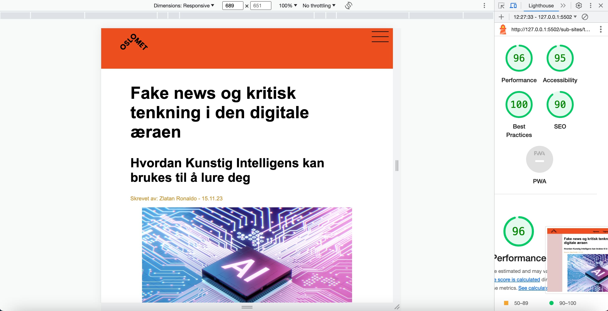
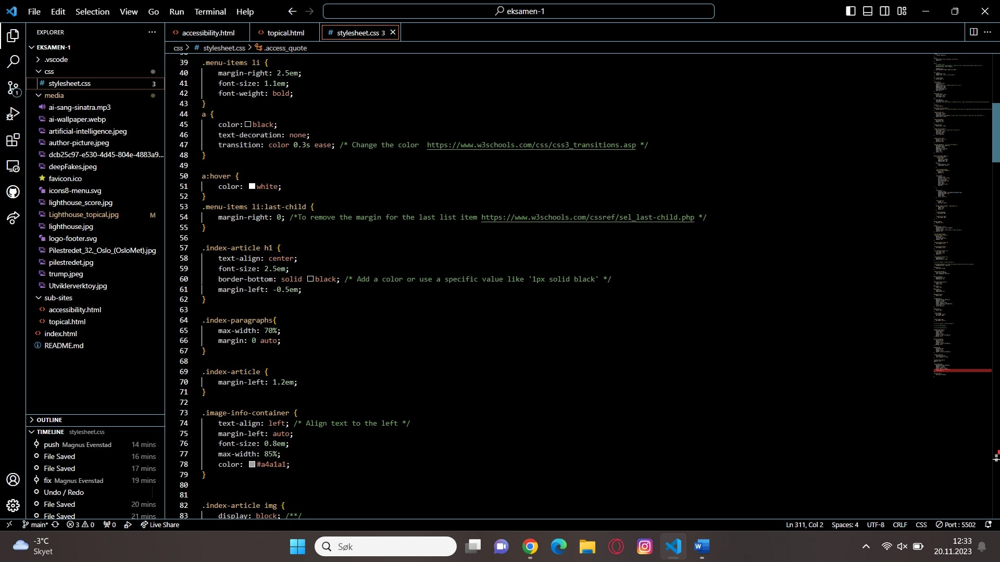

Tilgjengelighet
Tilgjengelighet refererer til praksisen med å designe og utvikle nettsider som kan tas i bruk av personer med ulike evner, inkludert de med funksjonshemninger. Web-tilgjengelighet skal sørge for å fjerne hindringer og tilby en åpen digitalisering som er tilgjengelig for alle.
For å teste tilgjengeligheten til HTML og CSS, er det viktig å følge retningslinjene for tilgjengelighet av webinhold (WCAG). Disse prinsippene inkluderer blandt annet håndterbarhet, forståelighet og robusthet. Alle prinsippene sørger for spesifikke aspekter av brukerinteraksjon og opplevelse, og hjelper utviklere med å skape innhold og utforming som er tilgjengelig for alle.
"The power of the Web is in its universality. Access by everyone regardless of disability is an essential aspect." - Tim Berners-Lee, W3C Direktør og oppfinneren av World Wide WebLes mer om WCAG og tilgjengelighet
- WCAG: Tilsynet for universell utforming av ikt
- WCAG: The World Wide Web Consortium
- Introduction to Web Accessibility W3C
Viktige aspekter av HTML og CSS tilgjengelighet
Alternativ tekst for bilder
Bilder er et viktig element i webdesign, men de kan være problematiske for brukere med synshemninger. Bruk av alternativ tekst vil kunne hjelpe dem med å gi en forståelse av bildet ved hjelp av skjermlesere.
HTML-elementer
Riktig bruk av overskrifter, lister og skjemaelementer er essesielt for å enkelt kunne navigere nettsiden.
Fargekontrast
Det er viktig å sørge for at tekst og bakgrunnsfarger har nok kontrast til å være lesbare for brukere med synshemninger.
Responsivt design
CSS er avgjørende for å skape responsivt design som tilpasser seg ulike skjermstørreslser. Testing bør sikre at utforming og innhold justeres på riktig måte for ulike enheter.
Testing av tilgjengelighet
Lighthouse er et automatisert testvertøy, som hjelper utviklere med å bedømme tilgjengelighet, ytelse og optimalisering av utvikleren sine nettsider. Dette vises som en score fra 0 til 100, der høyere verdier tilsvarer at nettsiden gjør det bedre på de gitte verdiene. Tilgjengelighetstesten til Lighthouse identifiserer elementer som kan påvirke brukere med ulike funksjonshemninger.
Lighthouse testen finner man under utviklerverktøy på Google.
 Trykk på de tre dottene i Google chrome, så på "flere verktøy", og så på "utviklerverktøy"
Trykk på de to pilene, og til slutt trykk på "Lighthouse"
Trykk på de tre dottene i Google chrome, så på "flere verktøy", og så på "utviklerverktøy"
Trykk på de to pilene, og til slutt trykk på "Lighthouse"
Resultat av Lighthouse test
Under ligger bilder av Lighthouse testen.
Som vi ser på på lighthouse testen av topical siden, har vi fått en god score. Det vi har fått trekk i på tilgjengelighet gjelder for liten kontrast mellom balgrunnsfarge og bildetekst.
Kodevalg for å bedre tilgjengelighet
Vi valgte å hovedsakelig bruke SVG og JPG filer på bildene for å få så god ytelse som mulig. Disse filene er av mindre filstørrelse enn PNG, og gjør dermed siden enklere å laste opp. I tillegg har vi laget bildetekst i andre farger enn hovedteksten, for å enkelt kunne se forskjeld på tekst og bildetekst.
Et annet kode-valg vi har gjort er å holde css siden på engelsk. Dette gjør at den vil være mer tilgjengelig dersom en som ikke forstår norsk skulle jobbet med siden.
